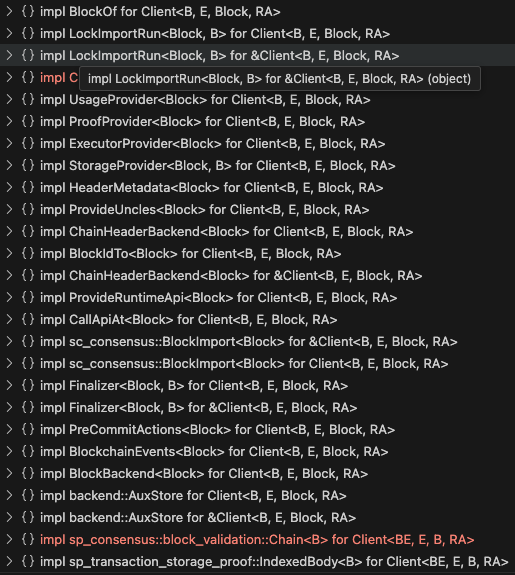

db.Backend Integration into Gossamer¶
The introduction of api.Backend interface and the implementation of the interface db.Backend has been completed in PR #4405. The api.Backend interface and it's associated implementation closely resembles the sc_api::backend::Backend trait. It introduces a client backend that handles historical block storage, as well fork aware state trie storage. It incorporates previous work regarding TrieBackend (PR #4318) which incorporates TrieDB work we have worked on previously (PR #4315). This client backend supports multiple pruning modes to allow persistence of a constrained window of finalized blocks, all finalized blocks, and no pruning at all. Pruning applies both to the block history as well as the trie state associated to blocks.
Overview of current code¶
There need to be something that utilizes db.Backend to fulfill the current state.BlockState and state.InmemoryStorageState functionalities.
BlockState¶
Currently the state.BlockState type is essentially used to store block history and to set finalization for stored blocks. The type state.BlockState does not have a corresponding interface that represents the entire public API of the type. After looking through the code, I've compiled the entire public interface of state.BlockState that is called by other packages. The interface is as follows:
type BlockState interface {
AddBlock(*types.Block) error
AddBlockWithArrivalTime(block *types.Block, arrivalTime time.Time) error
BestBlock() (*types.Block, error)
BestBlockHash() common.Hash
BestBlockHeader() (*types.Header, error)
BestBlockNumber() (number uint, err error)
GenesisHash() common.Hash
GetBlockBody(hash common.Hash) (*types.Body, error)
GetBlockStateRoot(bhash common.Hash) (common.Hash, error)
GetBlockByHash(common.Hash) (*types.Block, error)
GetBlockByNumber(blockNumber uint) (*types.Block, error)
GetFinalisedHeader(round, setID uint64) (*types.Header, error)
GetFinalisedHash(round, setID uint64) (common.Hash, error)
GetHashesByNumber(blockNumber uint) ([]common.Hash, error) // not sure why we need this, use `GetHashByNumber`?
GetHashByNumber(blockNumber uint) (common.Hash, error)
GetHeader(bhash common.Hash) (*types.Header, error)
GetHeaderByNumber(num uint) (*types.Header, error)
GetHighestFinalisedHeader() (*types.Header, error)
GetHighestFinalisedHash() (common.Hash, error)
GetHighestRoundAndSetID() (uint64, uint64, error)
GetJustification(common.Hash) ([]byte, error)
GetNonFinalisedBlocks() []common.Hash // can probably be achieved by getting last finalized, then traversing children
GetSlotForBlock(common.Hash) (uint64, error)
HasFinalisedBlock(round, setID uint64) (bool, error)
HasHeader(hash common.Hash) (bool, error)
HasJustification(hash common.Hash) (bool, error)
HasHeaderInDatabase(hash common.Hash) (bool, error) // can probably just use `HasHeader`
SetFinalisedHash(hash common.Hash, round uint64, setID uint64) error
SetHeader(header *types.Header) error
SetJustification(hash common.Hash, data []byte) error
GetRuntime(blockHash common.Hash) (instance runtime.Instance, err error) // can be achieved by retrieving digest from block and decoding
HandleRuntimeChanges(newState *rtstorage.TrieState, in runtime.Instance, bHash common.Hash) error // will have to be recreated
CompareAndSetBlockData(bd *types.BlockData) error
IsDescendantOf(parent, child common.Hash) (bool, error)
LowestCommonAncestor(a, b common.Hash) (common.Hash, error)
NumberIsFinalised(blockNumber uint) (bool, error)
Range(startHash, endHash common.Hash) (hashes []common.Hash, err error)
RangeInMemory(start, end common.Hash) ([]common.Hash, error)
StoreRuntime(blockHash common.Hash, runtime runtime.Instance)
FreeImportedBlockNotifierChannel(ch chan *types.Block)
GetImportedBlockNotifierChannel() chan *types.Block
FreeFinalisedNotifierChannel(ch chan *types.FinalisationInfo)
GetFinalisedNotifierChannel() chan *types.FinalisationInfo
RegisterRuntimeUpdatedChannel(ch chan<- runtime.Version) (uint32, error)
IsPaused() bool
Pause() error
}
StorageState¶
StorageState is an interface that is locally defined in a number of packages. It represents the functionality regarding accessing the current TrieState which gives access to the underlying in memory state trie (canonically known as "storage") for a given hash. Generation of storage trie proofs is part of this interface as well. The interface with largest amount of methods is defined in dot/core. The implementation of these StorageState interfaces is implemented by the type state.InmemoryStorageState. I've compiled the entire public interface of state.InmemoryStorageState that is called by other packages. The interface is as follows:
type StorageState interface {
TrieState(root *common.Hash) (*rtstorage.TrieState, error)
StoreTrie(*rtstorage.TrieState, *types.Header) error
GetStateRootFromBlock(bhash *common.Hash) (*common.Hash, error)
GenerateTrieProof(stateRoot common.Hash, keys [][]byte) ([][]byte, error)
GetStorage(root *common.Hash, key []byte) ([]byte, error)
GetStorageByBlockHash(bhash *common.Hash, key []byte) ([]byte, error)
StorageRoot() (common.Hash, error) // best block state root, use HeaderBackend
Entries(root *common.Hash) (map[string][]byte, error) // should be overhauled to iterate
GetKeysWithPrefix(root *common.Hash, prefix []byte) ([][]byte, error)
GetStorageChild(root *common.Hash, keyToChild []byte) (trie.Trie, error)
GetStorageFromChild(root *common.Hash, keyToChild, key []byte) ([]byte, error)
LoadCode(hash *common.Hash) ([]byte, error)
LoadCodeHash(hash *common.Hash) (common.Hash, error)
RegisterStorageObserver(o Observer)
UnregisterStorageObserver(o Observer)
sync.Locker
}
Integration of db.Backend¶
Given the defined interfaces of BlockState and StorageState, I propose we create a new wrapper type around something that integrates db.Backend denoted as a Client which will fulfill the implementation of both BlockState and StorageState interfaces. Given that storage notifications, import block notifications, and block finality notifications are not part of the db.Backend scope of functionality, there will need be to additional work to implement said notification functionality as part of the integration.
Introduction of a Client type¶
In substrate the Client is something that implements a number of traits:

External packages (ex. BABE, GRANDPA, sync, etc) import these smaller traits to achieve functionality regarding block and state storage. In substrate the Client also implements traits that handle calling into the runtime (ie. CallApiAt and ProvideRuntimeApi) that is out of scope regarding this integration. The substrate Client implements the BlockchainEvents trait which handles block import, finality, and storage notifications. The Client also implements the PreCommitActions trait which allows you to register callbacks whenever a block is imported and when finality is set for blocks. These PreCommitActions are used by the substrate client GRANDPA and BEEFY implementations.
I propose introducing a similar client.Client type that will fulfill the storage, block import, and finality notifications in a similar way. Translating the primitive types and the BlockchainEvents and PreCommitActions traits into interfaces will be quite easy. Implementation of these interfaces can closely align with the reference substrate code. The chief dependency of the subtrate Client is essentially the sc_db::Backend One thing to note is that blocks are pinned (stored in memory, and not pruned) in db.Backend when notifications are sent out. That means unpinning of blocks falls on the recipient of said notifications. This is usally handled in the rust code by reference counting the notifications with pin handles, and unpinning happens when the notification gets dropped (see code). Since in Go we don't have the Drop trait, we will need to manually drop the handle which will essentially unpin the block from the db.Backend and allow pruning to happen.
I also think the introduction of Client will provide a foundation that allows us to implement more of these smaller traits, which comprise the full scope of the substrate Client. Some of these traits are essentially the BlockState and StorageState interface functionalities that have already been introduced on the refactor/client-db branch and are described in api.Backend and implemented by db.Backend.
Implementation of BlockState and StorageState functionality to Client¶
At a high level I propose introducing a translation shim type that will contain an instance of Client and implement the BlockState and StorageState methods. Specific implementation notes for groups of functions within BlockState and StorageState are defined in the next sub sections.
Read-only BlockState functionality¶
The following methods for BlockState can be accomplished by translating and implementing the BlockBackend and HeaderBackend traits.
BestBlock() (*types.Block, error)
BestBlockHash() common.Hash
BestBlockHeader() (*types.Header, error)
BestBlockNumber() (number uint, err error)
GenesisHash() common.Hash
GetBlockBody(hash common.Hash) (*types.Body, error)
GetBlockStateRoot(bhash common.Hash) (common.Hash, error)
GetBlockByHash(common.Hash) (*types.Block, error)
GetBlockByNumber(blockNumber uint) (*types.Block, error)
GetFinalisedHeader(round, setID uint64) (*types.Header, error)
GetFinalisedHash(round, setID uint64) (common.Hash, error)
GetHashesByNumber(blockNumber uint) ([]common.Hash, error)
GetHashByNumber(blockNumber uint) (common.Hash, error)
GetHeader(bhash common.Hash) (*types.Header, error)
GetHeaderByNumber(num uint) (*types.Header, error)
GetHighestFinalisedHeader() (*types.Header, error)
GetHighestFinalisedHash() (common.Hash, error)
GetHighestRoundAndSetID() (uint64, uint64, error)
GetJustification(common.Hash) ([]byte, error)
GetNonFinalisedBlocks() []common.Hash
GetSlotForBlock(common.Hash) (uint64, error)
HasFinalisedBlock(round, setID uint64) (bool, error)
HasHeader(hash common.Hash) (bool, error)
HasJustification(hash common.Hash) (bool, error)
HasHeaderInDatabase(hash common.Hash) (bool, error) // can probably just use `HasHeader`
NumberIsFinalised(blockNumber uint) (bool, error)
I propose implementing the BlockBackend and HeaderBackend into the newly introduced Client. Given that db.Backend already provides access to the underlying HeaderBackend this is trivially implemented by calling the Backend.Blockchain() which returns an impl of blockchain.Backend which embeds HeaderBackend. BlockBackend is implemented by also calling methods on the returned impl blockchain.Backend from Backend.Blockchain().
After the introduction and implementation of the BlockBackend and HeaderBackend interfaces, we can create a translation shim type to map the above BlockState methods to utilize the Client methods for both BlockBackend and ChainHeaderBackend.
AddBlock¶
For the AddBlock(*types.Block) error function we will need to translate and implement the sc_consensus::BlockImport trait:
/// Block import trait
#[async_trait::async_trait]
pub trait BlockImport<B: BlockT> {
/// The error type.
type Error: std::error::Error + Send + 'static;
/// Check block preconditions.
async fn check_block(&self, block: BlockCheckParams<B>) -> Result<ImportResult, Self::Error>;
/// Import a block.
async fn import_block(&self, block: BlockImportParams<B>) -> Result<ImportResult, Self::Error>;
}
LockImportRun¶
The code that implements import_block utilizes the LockImportRun trait which contains a single lock_import_and_run function. I propose to translate and implement the LockImportRun trait first given it is a dependancy for BlockImport methods. By implementing the full logic of LockImportRun, there are calls to fire off the storage, finality, and block import notifications after a successful import.
After implementing LockImportRun, we will be able to implement the BlockImport interface which can then be utilized in the translation shim type to implement BlockState.AddBlock. Given that importing a block into db.Backend also updates the state trie, we do not need to call StorageState.StoreTrie anymore (example). We will need to refactor the AddBlock function signature to accept storage changes. This is discussed later in the TrieState section.
BlockchainEvents¶
Given that LockImportRun is the trigger for storage, finality and block import notifications we will be able to implement the BlockchainEvents and PreCommitActions traits.
BlockchainEvents contains the methods for registering channels for storage, finality and block import notifications. I propose adding a RegisterXXXNotification and accompanying UnregisterXXXNotification method for the finality and block import notifications. The storage notifcations are a little more complicated. Based on the rust code the sc_api::StorageNotifications type handles registering and unregistering of storage notifications. Listening on storage notifications is actually based on supplied top trie keys as well child trie keys (see code). We should mirror the implementation of the associated registry and business logic around going through registered storage notification listeners, and only notifying listeners based on the supplied top and child filter keys.
By implementing the BlockchainEvents interface we will be able to implement the following BlockState and StorageState methods in the translation shim.
type BlockState interface {
...
FreeImportedBlockNotifierChannel(ch chan *types.Block)
GetImportedBlockNotifierChannel() chan *types.Block
FreeFinalisedNotifierChannel(ch chan *types.FinalisationInfo)
GetFinalisedNotifierChannel() chan *types.FinalisationInfo
}
type StorageState interface {
...
RegisterStorageObserver(o Observer)
UnregisterStorageObserver(o Observer)
}
PreCommitActions¶
PreCommitActions is a trait that allows you to perform registered actions on block import and/or updated finality. The actions are performed before commiting to the underlying db. The actions and PreCommitActions traits are defined as follows:
/// Callback invoked before committing the operations created during block import.
/// This gives the opportunity to perform auxiliary pre-commit actions and optionally
/// enqueue further storage write operations to be atomically performed on commit.
pub type OnImportAction<Block> =
Box<dyn (Fn(&BlockImportNotification<Block>) -> AuxDataOperations) + Send>;
/// Callback invoked before committing the operations created during block finalization.
/// This gives the opportunity to perform auxiliary pre-commit actions and optionally
/// enqueue further storage write operations to be atomically performed on commit.
pub type OnFinalityAction<Block> =
Box<dyn (Fn(&FinalityNotification<Block>) -> AuxDataOperations) + Send>;
/// Interface to perform auxiliary actions before committing a block import or
/// finality operation.
pub trait PreCommitActions<Block: BlockT> {
/// Actions to be performed on block import.
fn register_import_action(&self, op: OnImportAction<Block>);
/// Actions to be performed on block finalization.
fn register_finality_action(&self, op: OnFinalityAction<Block>);
}
For OnImportAction you receive a BlockImportNotification and you're expected to return AuxDataOperations which is already introduced in PR #4405. The AuxStore interface is already introduced and implemented by db.Backend.
The PreCommitActions trait/interface is not used by any BlockState or StorageState functionality. Rather it will be used for future work regarding BEEFY and GRANDPA.
OffchainStorage¶
CompareAndSetBlockData(bd *types.BlockData) error
CompareAndSetBlockData is currently used in sync and is already introduced in offchain.OffchainStorage.CompareAndSet(). It is implemented by offchain.LocalStorage which is a dependency of db.Backend. Adding the CompareAndSetBlockData function to the translation shim should therefore be relatively simple given the functionality is already implemented.
Utility functions¶
The utilization of already introduced utility functions and types can be used to implement the following BlockState methods.
IsDescendantOf(parent, child common.Hash) (bool, error)
LowestCommonAncestor(a, b common.Hash) (common.Hash, error)
Range(startHash, endHash common.Hash) (hashes []common.Hash, err error)
RangeInMemory(start, end common.Hash) ([]common.Hash, error)
IsDescendantOf can be found in client/api/utils (see code).
LowestCommonAncestor can be found in primitives/blockchain (see code)
Range and RangeInMemory can be implemented by using blockchain.TreeRoute. The constructor NewTreeRoute takes a start and end block hash. We should also remove the usage of RangeInMemory given that all finalized and non-finalized blocks are now in the same db.Backend. So a small refactor to the only external usage in dot/core should be updated to use Range.
These functions should be added to the translation shim since they are used externally from dot/state.
Runtime Storage¶
StoreRuntime(blockHash common.Hash, runtime runtime.Instance)
StoreRuntime function should be copied from existing BlockTree type (see code). The shim type should contain the map of cached runtimes. I would consider using an LRU map to ensure we don't store all runtimes while synching.
An alternative is to remove StoreRuntime and just fetch the code from the block body supplied by db.Backend and instantiate a runtime on demand instead of caching.
Updated runtime notifications¶
RegisterRuntimeUpdatedChannel(ch chan<- runtime.Version) (uint32, error)
Updating observers for runtime upgrades can be accomplished by listening on BlockImportNotifications. However since this is only accessed via RPC at this moment, we can de-prioritize this work if needed.
Read-only StorageState functionality¶
The following StorageState methods are relatively easy to implement in the translation shim by utilizing db.Backend.
GetStorage(root *common.Hash, key []byte) ([]byte, error)
GetStorageByBlockHash(bhash *common.Hash, key []byte) ([]byte, error)
GetKeysWithPrefix(root *common.Hash, prefix []byte) ([][]byte, error)
GetStorageChild(root *common.Hash, keyToChild []byte) (trie.Trie, error)
GetStorageFromChild(root *common.Hash, keyToChild, key []byte) ([]byte, error)
GetStateRootFromBlock(bhash *common.Hash) (*common.Hash, error)
StorageRoot() (common.Hash, error)
Entries(root *common.Hash) (map[string][]byte, error)
LoadCode(hash *common.Hash) ([]byte, error)
LoadCodeHash(hash *common.Hash) (common.Hash, error)
GetStorageXXX methods are easily accessible by translating and implementing the StorageProvider trait for Client.
GetStateRootFromBlock can be retrieved from already introduced HeaderBackend interface which db.Backend implements. Same for StorageRoot.
Entries should be refactored to utilize an iterator where Entries is called. I propose refactoring this method to return a PairsIter which iterates through the keys and values.
LoadCode and LoadCodeHash should be trivially implemented by accessing the state trie for a given hash and retrieving the entry with key ":code".
Retrieving and storing TrieState¶
TrieState(root *common.Hash) (*rtstorage.TrieState, error)
StoreTrie(*rtstorage.TrieState, *types.Header) error
The TrieState() method defined in StorageState is responsible for retrieving the state trie for a given block hash. It retrieves the Trie associated to the block hash and returns a *rtstorage.TrieState. This method is almost exclusively called before calling Instance.SetContextStorage to be able track storage changes by a runtime instance. There are methods in TrieState that handle storage changes as well as starting, rolling back, and committing transactions. The changes are handled through storageDiff currently, which keep all the changes in memory before commiting, and applying them to a new in-memory trie to compute the state root. StoreTrie is explicitly called to persist the trie in InmemoryStorageState to be accessible later.
Given that storing a block and it's associated storage changes are handled in one BlockImportOperation, we should remove the StoreTrie method entirely from StorageState. Rather BlockState.AddBlock should accept an introduced OverlayedChanges type analogous to the substrate primitive. I propose creating an interface around TrieState first. Second, we create a new type that implements TrieState which combines the read-only TrieBackend of the block hash, as well as the OverlayedChanges type that can be extracted before calling AddBlock. This new TrieState will be passed into the runtime instance. This introduced implementation of TrieState is analogous to the substrate primitive sp_statemachine::ext::Ext and the analogous trait to the TrieState interface is sp_externalities::Externalities. By following this approach, it should limit the amount of changes within the wazero runtime instance code.
PebbleDB Integration¶
db.Backend is constructed using an implementation of the database.Database interface. We have already introduced the DBAdapter type which takes an underlying kvdb.KeyValueDB implementation and implements database.Database. We will have to implement an implementation of kvdb.KeyValueDB that is powered by PebbleDB and use that when constructing Client and it's associated db.Backend.